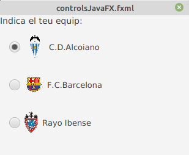

Ara anem a parlar sobre el control del botó de radi i la classe RadioButton, una implementació especialitzada de la classe ToggleButton.
Un control de radio button pot seleccionar-se o deseleccionarse. En general, els botons d’opció es combinen en un grup on sol es pot seleccionar un botó alhora. Aquest comportament els distingeix dels toggle buttons, ja què tots els botons d’alternança en un grup poden estar en un estat no seleccionat.
També es pot crear al igual que feiem en els botons, un radio button que tinguera text, text i imatge o solament una imatge.
Els botons d’opció s’usen generalment en un grup per a presentar diverses opcions mútuament excloents. L’objecte ToggleGroup proporciona referències a tots els botons de ràdio que estan associats amb ell i els administra perquè només es puga seleccionar un dels botons de ràdio alhora.
En el següent exemple es crea un grup d’alternança, crea dos button radio, agrega cada botó de ràdio al grup d’alternança i especifica quin botó ha de seleccionar-se quan s’inicia l’aplicació.
// Group
ToggleGroup group = new ToggleGroup();
// Radio 1: Male
RadioButton button1 = new RadioButton("Male");
button1.setToggleGroup(group);
button1.setSelected(true);
// Radio 3: Female.
RadioButton button2 = new RadioButton("Female");
button2.setToggleGroup(group);
si estem creant el fitxer fxml en scene builder, afegirem els radioButtons arrosegant-lo en la part del panell que vulgam. seguidament, li indicarem a quin grup pertany. aço ho realitzem en l’opció ToggleGroup que trobem en la pestanya propieties:
Com es veu en la imatge, també podem indicar-li l’element que volem que estiga seleccionat al principi.

Ara podem veureun exemple d’un grup de Radio buttons, amb el seu codi fxml:
<VBox prefHeight="182.0" prefWidth="265.0" xmlns="http://javafx.com/javafx/8.0.171" xmlns:fx="http://javafx.com/fxml/1" fx:controller="org.example.controlsJavafx">
<children>
<Label prefHeight="16.0" prefWidth="256.0" text="Indica el teu equip:">
<font>
<Font size="14.0" />
</font>
</Label>
<RadioButton mnemonicParsing="false" selected="true" text="C.D.Alcoiano">
<VBox.margin>
<Insets bottom="15.0" left="15.0" right="15.0" top="15.0" />
</VBox.margin>
<toggleGroup>
<ToggleGroup fx:id="group" />
</toggleGroup>
<graphic>
<ImageView fitHeight="41.0" fitWidth="38.0" pickOnBounds="true" preserveRatio="true">
<image>
<Image url="icons/CD_Alcoyano.png" />
</image>
</ImageView>
</graphic>
</RadioButton>
<RadioButton mnemonicParsing="false" text="F.C.Barcelona" toggleGroup="$group">
<VBox.margin>
<Insets bottom="15.0" left="15.0" right="15.0" top="15.0" />
</VBox.margin>
<graphic>
<ImageView fitHeight="26.0" fitWidth="36.0" pickOnBounds="true" preserveRatio="true">
<image>
<Image url="icons/barsa.jpg" />
</image>
</ImageView>
</graphic>
</RadioButton>
<RadioButton mnemonicParsing="false" text="Rayo Ibense" toggleGroup="$group">
<VBox.margin>
<Insets bottom="15.0" left="15.0" right="15.0" top="15.0" />
</VBox.margin>
<graphic>
<ImageView fitHeight="38.0" fitWidth="38.0" pickOnBounds="true" preserveRatio="true">
<image>
<Image url="icons/rayo.png" />
</image>
</ImageView>
</graphic>
</RadioButton>
</children>
</VBox>